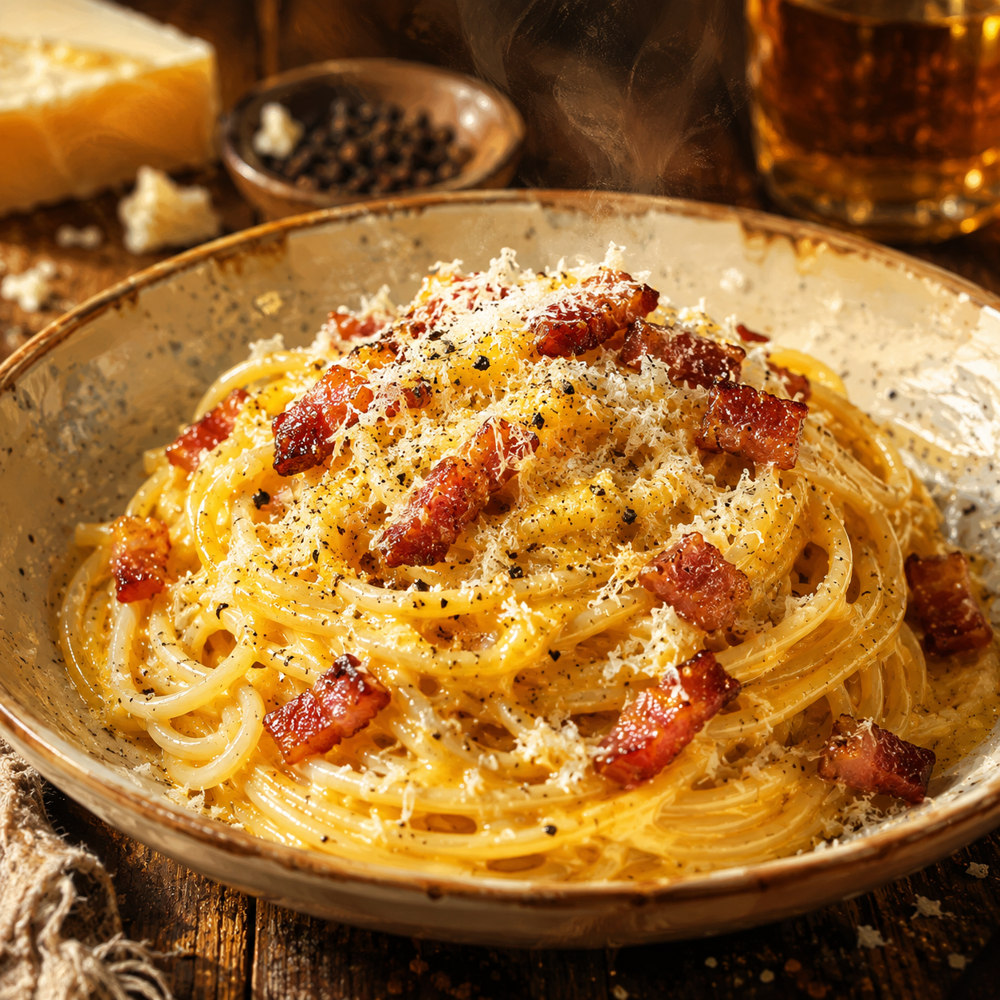

Carbonara
Home

Description
This is a Roman-style carbonara: a simple pasta where a silky sauce comes from eggs, Pecorino Romano, black pepper, and starchy pasta water—not cream. Guanciale adds richness and depth; pancetta is a common substitute if guanciale is hard to find.
Ingredients
Ingredients
- Spaghetti or rigatoni
- Guanciale (or pancetta)
- Eggs (mostly yolks; e.g. 2 yolks plus 1 whole egg)
- Pecorino Romano, finely grated
- Black pepper
- Salt for the pasta water
The sauce stays creamy from emulsifying cheese, eggs, and pasta water with the rendered fat—no need for cream.
Steps
- Bring well-salted water to a boil. As a rule of thumb, the water should taste like sea water after salt was added.
- Cook the pasta until al dente.
- Cut the guanciale into strips or cubes and cook until crisp and the fat has rendered; avoid burning.
- In a bowl, whisk the eggs with most of the Pecorino and plenty of black pepper.
- Before draining the pasta, scoop out some hot, starchy pasta water and keep it nearby.
- Drain the pasta (or transfer it with tongs into the pan with the guanciale). The pan should not be ripping hot when you add the eggs.
- Pour in the egg-cheese mixture and toss quickly so it coats the pasta without scrambling.
- Add splashes of pasta water, tossing, until the sauce is silky and creamy.
- Plate immediately and finish with more Pecorino and black pepper.
Enjoy your carbonara!